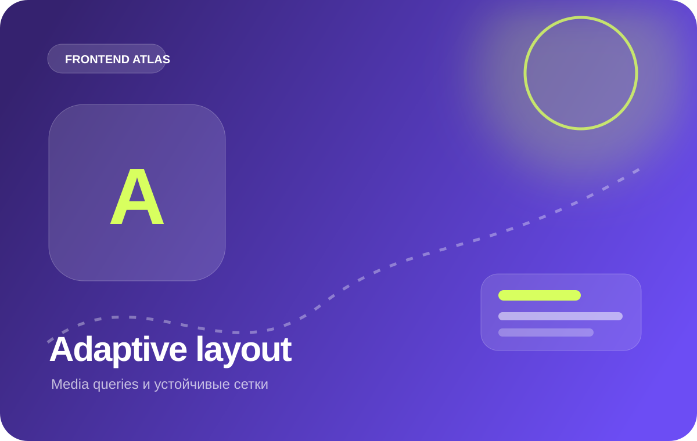
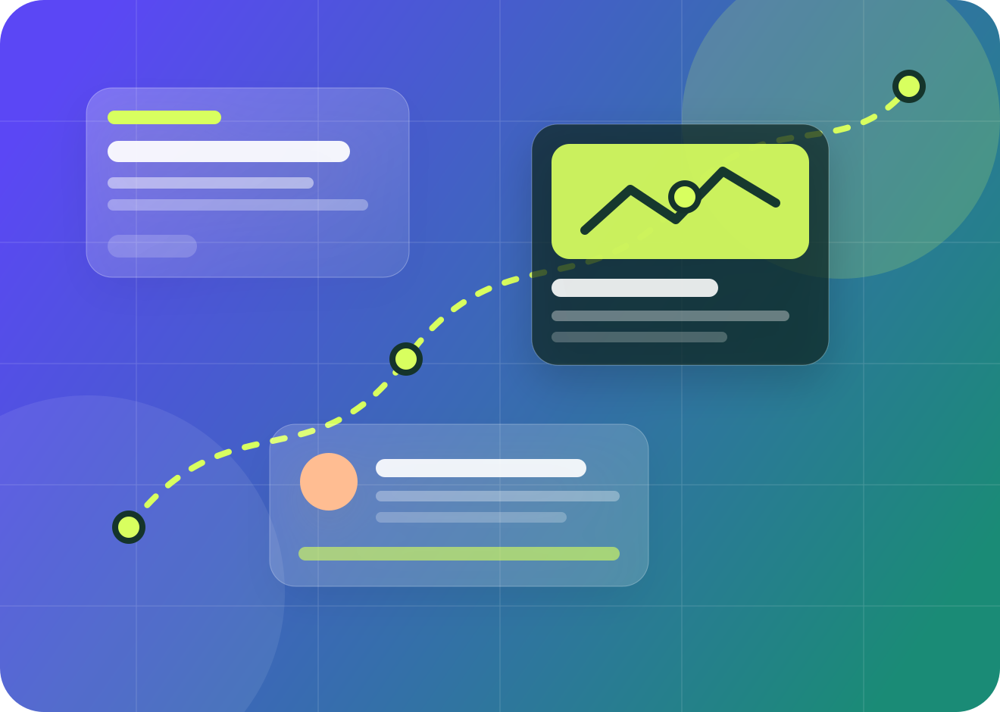
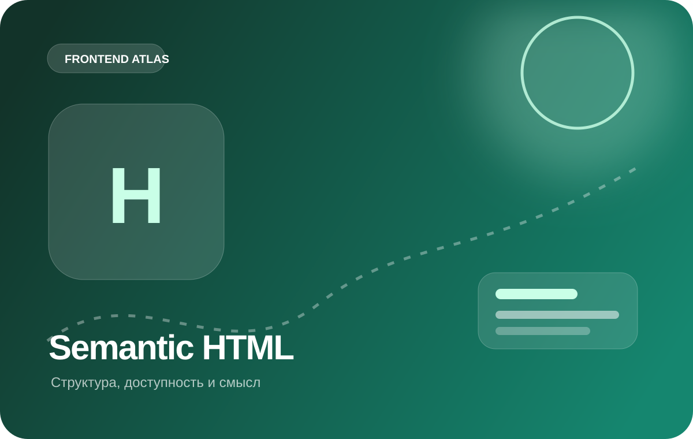
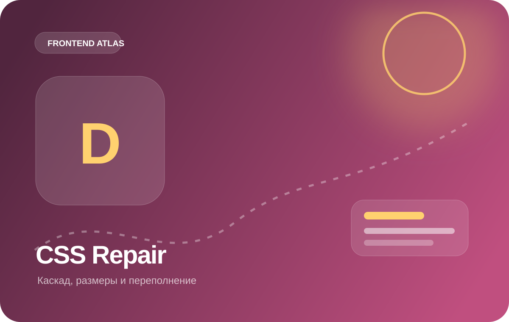
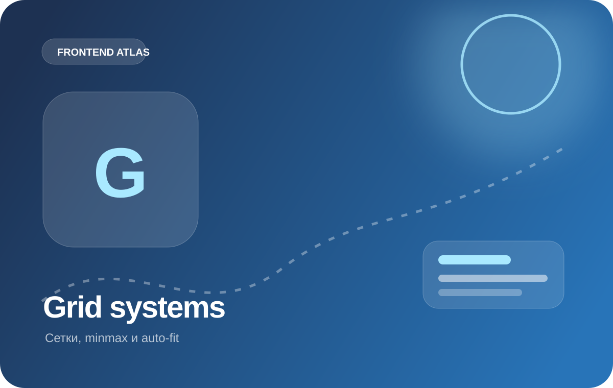
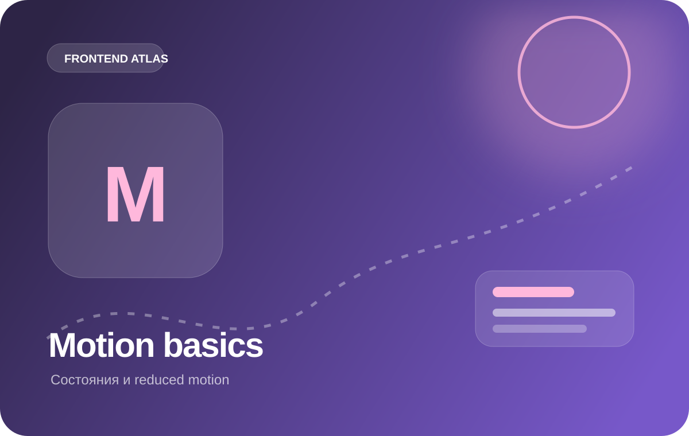
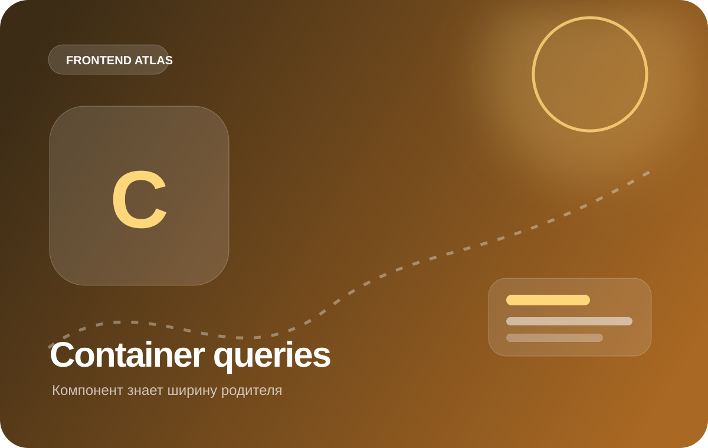

Адаптивная страница без набора устройств
Начните с устойчивой узкой композиции, добавьте две перестройки по содержимому и проверьте, что длинные строки, карточки и навигация не создают переполнение.
Перейти к материаламПостройте страницу, которая не привязана к одному экрану. Сначала настройте узкую версию, затем добавьте перестройки по содержимому и научите карточки реагировать на ширину собственного контейнера.

Одна карточка используется в разных областях страницы. Её внутренняя композиция зависит от доступного места, а не от ширины viewport.

Начните с устойчивой узкой композиции, добавьте две перестройки по содержимому и проверьте, что длинные строки, карточки и навигация не создают переполнение.
Перейти к материалам
Сохраняйте логичный порядок документа и не исправляйте мобильную версию через случайный CSS order.
Открыть конспект
Проверьте минимальные размеры grid- и flex-элементов, длинные строки и реальные границы проблемного компонента.
Открыть чек-лист
Используйте minmax(), gap и резиновые треки вместо набора фиксированных ширин под конкретные устройства.
Открыть пример
Сначала добейтесь устойчивой статической композиции, затем возвращайте состояния, переходы и reduced motion.
Повторить правила
Меняйте ширину постепенно и фиксируйте момент, когда конкретной композиции становится тесно.
Начать проверкуПроверьте длинный текст, навигацию, изображения и отсутствие горизонтального скролла между контрольными ширинами.
Перестройка нужна там, где композиции становится тесно, а не в точке из готового списка популярных устройств.
Если блок используется в main и sidebar, внутреннюю композицию лучше привязать к контейнеру, а не ко всему viewport.